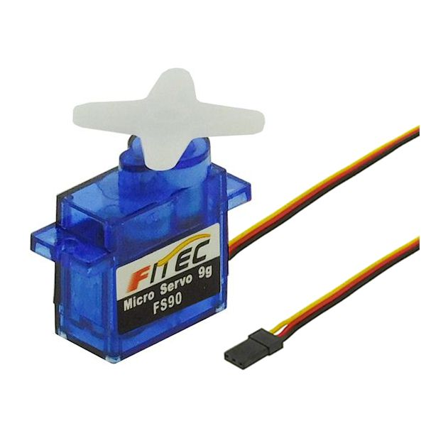
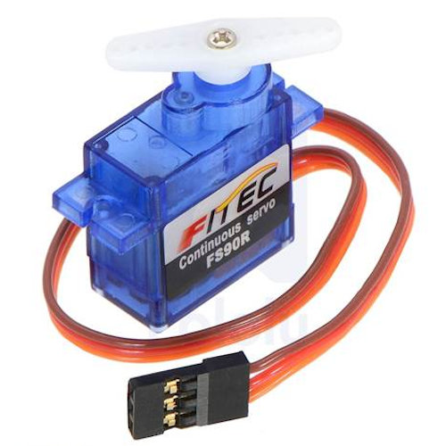
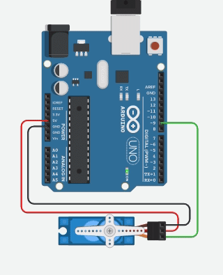
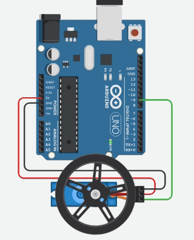

name: default-page layout: true background-image: url("fablabsp_icon_100px.png") background-position: 98% 2% --- class: center, middle # Servo Motors --- template: default-page layout: false # Servo Motors - A special type of motor that can hold a position instead of just rotating the rotor. - Only 2 types - Normal Servo Motors (positional) - Continuous Servo Motores (rotational) - Controlled by sending a pulse of varying sizes - Easily done using PWM - Easily programmed using a library - Used in applications for - maintaining position - controlling forward/reverse rotation speed .footer.right[Dronebot Workshop: [Using Servo Motors with Arduino](https://www.youtube.com/watch?v=kUHmYKWwuWs)] --- template: default-page layout: false # Typical Servo Motors .left-column-50[ ### [FS90](https://www.pololu.com/product/2818)  - 9g Micro Servo Motor - Specifications: - 4.8~6 V - positional control - 120<sup>o</sup> operating angle ] .right-column-50[ ### [FS90R](https://www.pololu.com/product/2820)  - 9g Micro Continuous Rotation Servo - Specifications: - 4.8~6 V - continuous rotation - 130 rpm no-load - Rest point at 1.5 ms ] --- template: default-page layout: false # Control - Movement (positional/rotational) done with a pulse - FS90/FS90R pulses between 900 uS and 2100 uS - Changing the pulse width, changes the position/rotation - Arduino: use the .blue[Servo] library <img src="https://arduinogetstarted.com/images/tutorial/how-it-works-servo-motor.gif" style="width:750px"> .footer.right[ ArduinoGettingStarted [Arduino - Servo Motor](https://arduinogetstarted.com/tutorials/arduino-servo-motor)] --- template: default-page layout: false # Servo Library - Ref: [Servo](https://www.arduino.cc/reference/en/libraries/servo/) - Provides an object class .blue[Servo] - Important methods: - attach(.blue[pinNo]) informs CPU which PWM pin to use - write(.blue[angle]) turns/rotates servo (0 to 180) - 0 minimum position - 90 central position/no movement - 180 maximum position - read() returns the angle of the servo (0 to 180) - detach(.blue[pinNo]) removes the pin from Servo use ### Servo motors need external Power! --- template: default-page layout: false # Positional Servo Example .left-column-50[  ### Using FS90 ] .right-column-50[ ```cpp #include <Servo.h> // using the Servo library #define SM1 9 // servo on pin 9 // UNO - 3,5,6,9,10,11 Servo myServo; // create a Servo object void setup(){ myServo.attach(SM1); // servo is on pin 9 } void loop(){ myServo.write(0); // start at min position delay(1000); myServo.write(90); // move to mid-position delay(1000); myServo.write(180); // move to max position delay(1000); } ``` ] --- template: default-page layout: false # Rotational Servo Example .left-column-50[  ### Using FS90R ] .right-column-50[ ```cpp #include <Servo.h> // using the Servo library Servo myServo; #define LED 13 void setup() { myServo.attach(9); } void loop() { for (int i=0; i <= 90; i=i+10){ myServo.write(i); delay(500); } myServo.write(90); delay(5000); } ``` ] --- class: center, middle # Servo Motors ### .red[End]